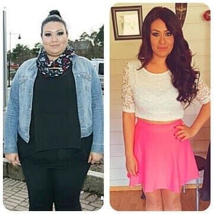
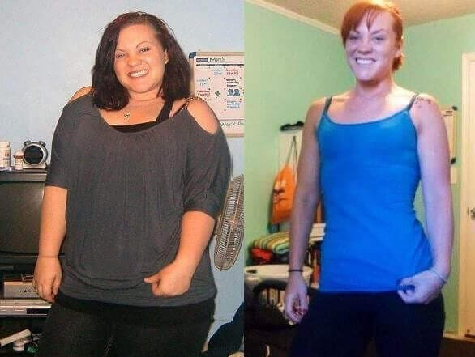
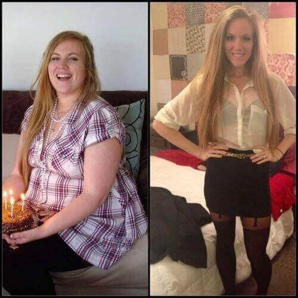

Ahoj! Všichni si všimli, že jsem hodně zhubla a začali se mě vyptávat . Snažila jsem se všem odpovědět, ale nebylo to možné - chodilo mi tolik zpráv, že bych musela být neustále online. Rozhodla jsem se tedy napsat tento článek a odpovědět na otázku: "Jak se ti podařilo zhubnout 31 kg?" (Neznamená to, že mi nemůžete psát a ptát se mě, jen si chci usnadnit život.)
Změna mi trvala jen DVA MĚSÍCE! TO JE ÚŽASNÉ, ŽE ANO?
Nikdy jsem nebyla štíhlá, ale poslední dobou jsem si všímala, že přibírám stále rychleji. Měla jsem tlusté břicho, v bikinách jsem vypadala jako buldok a boky, nohy a zadek jsem měla stále větší a větší! Rozhodla jsem se získat štíhlé tělo za každou cenu , takže jsem přestala jíst tučná jídla a nejedla jsem pozdě večer. Ráno jsem chodila běhat a večer jsem trénovala v posilovně, ale místo abych zhubla, jsem stále více přibírala! Po měsíci jsem na váze viděla skoro 100 kg - HROZNÉ! Začala jsem držet ještě přísnější dietu, nejedla jsem maso, chleba, hranolky ani sladkosti. Nakonec jsem jedla jen ovoce a zeleninu a pila jsem jen vodu. Zkoušela jsem drahé čaje a pilulky na hubnutí, ale nic nezabíralo . Po nějaké době jsem vždy přibrala všechna kila, která se mi podařilo shodit.
Nepomohly mi diety ani pilulky, všechno jsou to podvody!
Cvičení je náročné a trvá dlouho, než
uvidíte výsledky. Co jsem tedy měla dělat?
Po spoustách diet, pilulek a hodinách v posilovně a spoustě peněz utracených za osobního trenéra jsem to vzdala. Jednoho dne jsem narazila na článek o a rozhodla jsem se tento přípravek zkusit. Slyšela jsem, že pomohl Demi Moore, Katy Perry, J-Lo a mnoha dalším celebritám, ale přesto jsem byla skeptická. Už jsem ale zkusila všechno ostatní a byla jsem zoufalá, neměla jsem jinou možnost! Kromě toho jsem si přečetla recenze a byly opravdu pozitivní!
Miliony žen v Evropě a v USA zhubly s pomocí . Podle výzkumů 96,7% žen zhublo 12-17 kg jen za 3 týdny!

Byla jsem tedy rozhodnutá! Šla jsem na webovou stránku , všechno jsem si znovu zkontrolovala a doplněk si objednala. Dorazila během dvou týdnů. Přečetla jsem si pokyny a začala jsem užívat 1 dávku denně, stačí rozmíchat prášek ve sklenici s 150 ml vody.
Výsledky
Po pouhých dvou týdnech jsem měla skvělé výsledky - zhubla jsem 6 kg! Nebyla jsem oteklá a měla jsem mnohem hezčí pleť! Boky a břicho se mi viditelně zmenšily a měla jsem i lepší náladu! Začala jsem věřit, že můžu být opět krásná i bez diet a cvičení! Takže jsem stále jedla všechno, co jsem chtěla ! Byla jsem už unavená z neustálého hladovění a cvičení…
Na konci třetího týdne jsem měla o dalších 12 kg méně! Byla jsem stále více fit a začala jsem chodit po schodech, místo abych jezdila výtahem. To, co pro mě dřív bylo náročné, bylo najednou příjemné! Nemohla jsem věřit tomu, co se stalo jen díky dodržování snadných pokynů na obalu kávy! Když jsem to dokázala já, dokážou to všichni! Jen za dva měsíce jsem zhubla 31 kg!
Dosáhla jsem své vysněné váhy 60 kg. Neměla jsem břicho, zhubla jsem 31 kg a měla jsem tělo, o kterém jsem vždy snila !
Mimochodem, byl testován Národní akademií věd v roce 2014. Výsledky byly ohromující, ale nikdy se nedostaly na veřejnost. Myslím, že farmaceutické společnosti, výživoví poradci a předražené kliniky na hubnutí by zkrachovaly! Není divu: je neuvěřitelně levný!

Nyní doporučuju všem svým kamarádkám i kolegyním. Pozor: objednávejte pouze z oficiálních webových stránek , jinak byste mohli koupit padělek. Jsem se svými výsledky moc spokojená a věřím, že i vy budete spokojení! Zapomeňte na stereotypy: nepotřebujete diety a cvičení, abyste měli hezkou postavu!
P.S. Všichni, kdo jste zhubli díky , napište mi sem prosím svoje výsledky! Pomůže to lidem ukázat, že to opravdu funguje! Díky!
Ahoj! Mám skvělé zprávy! zástupci mě kontaktovali a nabídli mi 50% slevu pro prvních 100 návštěvníků mého blogu, kteří si produkt objednají!
komentáře
Milá Jano, děkuji za váš inspirativní příběh, pomohlo mi to zbavit se své nadváhy! Stačily tři týdny a zhubla jsem 28 kg. Nyní vážím 57 kg a přesně jak jste slíbila, váha se mi už nevrací. Moc díky, Kateřina
Už dlouho sním o štíhlém těle, přečetla jsem si o na tomto blogu asi před měsícem. Váhala jsem s objednávkou, ale moje máma mě přesvědčila. Není to drahé na to, že vám to splní sen! Nyní hubneme společně. Má ale lepší výsledky než já =(
Jsem moc ráda, že jsem našla tento blog. Rozhodně zkusím tuto doplněk ! Děkuji
Ahoj Jano! Řídila jsem s tvými radami a zkusila a musím říct, že jsi mi zachránila rodinu a manželství =) Jano, jsi skvělá! Můj manžel se úplně změnil a já mám mnohem více sebevědomí… Cítím se nyní SKVĚLE! =)
Ahoj holky, taky se k vám přidám! Právě mi přišel balíček Doufám, že se díky tomu zbavím přebytečných kilogramů. Napíšu vám sem svoje výsledky xoxo
Ahoj Nikolo! Mám z tebe velkou radost! Nejdůležitější je harmonie s vlastním tělem, jinak se to nepodaří. Moc se těším na tvoje první výsledky. A nezapomeň: i malý pokrok je lepší než žádný pokrok! Hodně štěstí!
Milá Jano, jsem moc ráda, že jsem našla tvoji stránku a získala tolik podpory. Zkoušela jsem spoustu různých způsobů, jak zhubnout, ale bohužel se mi to nikdy nepodařilo. Měřím 160 cm a vážím 97 kg - to je ostuda!!! Musím zhubnout alespoň 36 kg a vypadá jako moje poslední naděje…
Ahoj Karolíno! Nejsem jediná, kdo zhubl díky tomuto doplňku ! Moje kamarádky to taky zkusily a FUNGUJE TO, takže ti můžu 100% zaručit, že nebudeš znovu zklamaná. Jsme se svými výsledky všechny moc spokojené a přejeme ti to samé!
Dámy, ještě jednou vás chci poprosit, abyste se s námi podělily o své výsledky, moc nám to pomůže! Možná to bude právě vaše zpráva, co někomu pomůže získat krásné a štíhlé tělo!
Včera mi to přišlo a dnes začínám svůj nový život! Nemůžu se dočkat svých výsledků)
Milá Jano! Mockrát ti děkuji! Zhubla jsem rychle, ale nejlepší je, že se mi váha nevrací jako dříve! Je to zázrak! Doporučuji tento doplněk všem svým kamarádkám! Už se nemůžu dívat na to, jak zbytečně hladoví.
Mám zítra rande a jdeme na večeři do drahé restaurace. Před několika týdny by mě myšlenka na jídlo v restauraci vyděsila a představovala bych si, kolik kalorií to bude. Teď je mi to jedno! Vím, že můžu jíst co chci a nepřiberu. Zhubla jsem 27,5 kg s jen za jeden měsíc! Děkuji, Jano Horáková!
Wow Petra, opravdu jsi toho dosáhla za měsíc? Možná bych si měla objednat taky… Přibrala jsem další tři kila, je to hrozné…
Zhubla jsem 18 kg za 6 týdnů!! Je to neuvěřitelné! Děkuji, Jano Horáková!!!
Gratuluju, Aleno! Vaše výsledky jsou úžasné! Už nepochybuji o tom, že opravdu funguje!!!
Podělím se s vámi o svoje výsledky, jak jsem slíbila. Funguje to skvěle. Zhubla jsem skoro 15 kg za 6 týdnů. WOW!
Zapomeňte na všechny svoje pochybnosti, toto opravdu funguje! Moje kamarádka taky zhubla díky - asi 18 kg za 2 měsíce, pokud se nepletu. To je skvělé, že ano?
Děkuji za vaše recenze, dámy! Motivovalo mě to, abych si objednala a začala pracovat na svém hubnutí! Už se mi podařilo shodit 5 kg, ještě 6 a dosáhnu svého cíle!
Moje tři sestřenice se po užívání tohoto doplňku změnily za pouhé dva měsíce. Už to nejsou plnoštíhlé dívky, ale krásné mladé ženy!
Zde jsou moje výsledky: Zhubla jsem 12,5 kg bez jediné návštěvy posilovny! Všichni jsou tím ohromení :))
Ahoj Gabrielo! Mám z tebe velkou radost! Nechtěla jsi ale zhubnout ještě o něco více? Je to dobrý začátek, tak pokračuj! Hodně štěstí!
Ahoj Jano! Četla jsem tvůj příspěvek a rozhodla jsem se objednat si . Brzy mě čeká sraz ze střední školy a nechtěla bych se tam objevit se svými 115 (!!!!) kg a velikostí XXL!!! Když mi byl 17 let, byla jsem tak štíhlá… Nyní vážím 68 kg a na ten večer mám šaty velikosti M. Pořád mám co zlepšovat, ale jsem vděčná, že mám nyní motivaci začít. Děkuji!
Vaše výsledky jsou neuvěřitelné.. Ale opravdu nemusíte držet žádnou dietu? Už v žádném případě nechci držet další nízkosacharidovou dietu, nebo něco podobného… už žádné hladovění prosím!
Lucie, máte pravdu. nevyžaduje žádné diety. Všichni víme, že jakmile člověk přestane držet dietu, začne hned zase přibírat - a to se vám nikdy nestane, když budete brát . Tak se nebojte a zkuste to, uvidíte sama!
Musím se podělit!!! Zhubla jsem 20 kg za dva měsíce!!! Tato doplněk je opravdu úžasná ! S mým manželem teď máme druhé líbánky)))
Začala jsem brát tento doplněk před 2 měsíci a už jsem zhubla 23 kg! Stydím se, že jsem měla 90 kg a nechtělo se mi na dovolené chodit na pláž…
Musím nutně zhubnout 14 kg, co nejdřív… narazila jsem na tuto stránku a všechny ty komentáře mě fascinují… Rozhodně dám tomuto přípravku šanci a uvidím, co se stane) popřejte mi štěstí!
Moje sestra mi koupila několik balení loni v Japonska. První jsem si myslela, že to je nějaká hloupost - jak je možné zhubnout bez diety a cvičení. Sestra mě ale přesvědčila, abych to zkusila… nikdy by mě nenapadlo, že to je možné… Začala jsem pít tuto doplněk v únoru a v květnu jsem MUSELA KOMPLETNĚ ZMĚNIT OBLEČENÍ! Všechno mi bylo velké!!! Zhubla jsem z 92 kg na 58 kg za méně než dva měsíce!!!! Už uběhly dva roky a mám pořád stejnou váhu! Jsem teď šťastná. Prostě zkuste tento doplněk aspoň na dva týdny…. A uvidíte…
Wow Danielo, vaše výsledky jsou úžasné! Dámy, moc se omlouvám, že nezvládám odpovídat na každý komentář, ale všechny zprávy si čtu a chci říct, že z vás a z vašich úspěchů mám velkou radost!
Je to tak dávno, že se mi teď zdá nemožné, že jsem vážila 79 kg… Nyní mám 54 kg a můžu jíst všechno, na co mám chuť a váha se mi nemění! Chci se s vámi podělit o fotky:
Milá Jano a všichni, kteří sem píšete recenze! Nedokážu ani vyjádřit svůj vděk a štěstí… Je mi 33 let a v posledních několika letech jsem si prošla kvůli své váze peklem. I ty nejjednodušší tréninky byly náročné, bolely mě záda a byla jsem pořád vyčerpaná... četla si vaše příspěvky a rozhodla jsem se zkusit - a výsledky byly nad očekávání! Nyní vážím 63 kg, ale dříve to bylo 91 kg! Zhubla jsem těch 28 kg za tři měsíce! Cítím se skvěle a vypadám o 10 let mladší! Už netrpím dýchacími problémy a záda mě dávno nebolí!
Pila jsem nějaký japonský čaj na hubnutí a pomohl mi shodit 2 kg, ale během 2 týdnů jsem to zase přibrala(( prosím řekněte mi, že s to bude jiné?
Ahoj Anno. Vůbec se neboj, to se nestane. Podívej se na fotky těchto krásných žen a na moje fotky - rychle jsme zhubly a od té doby jsme nepřibraly! Kyselina chlorogenová opravdu funguje a umožní ti dostat tvoji váhu pod kontrolu. Měla bys zkusit alespoň na týden a uvidíš výsledky!